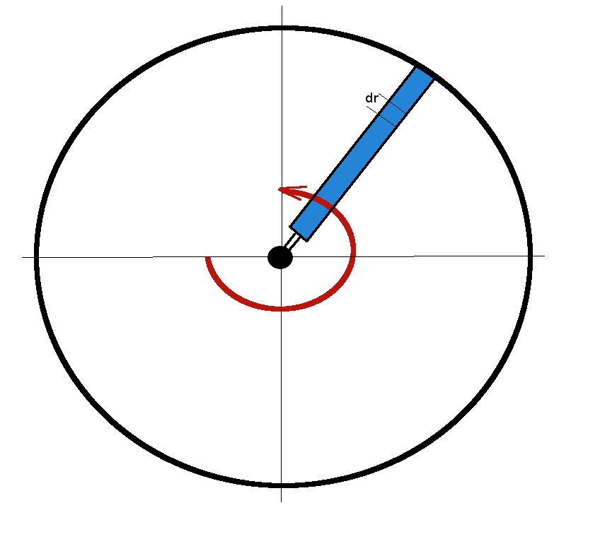
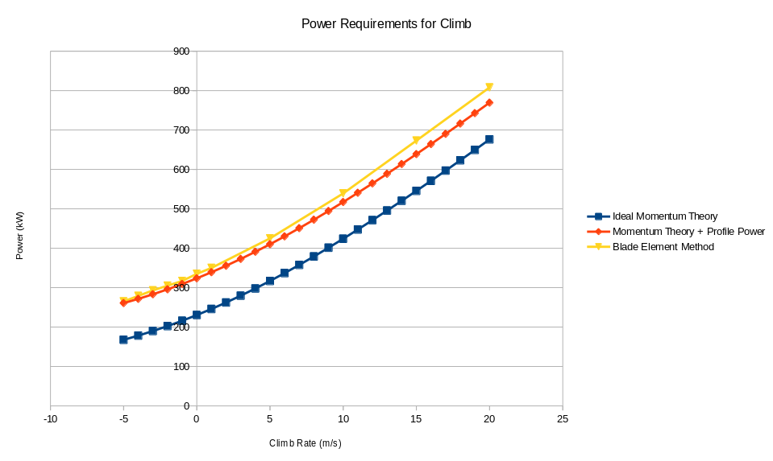

Rotor Blade Profile Drag
As well as the power requirements to create induced velocity and to climb at a given velocity, additional power is required to over come the profile drag of the rotor blades as they move within the rotor disk.

The drag on a small element of a blade will be
where
$C_D $ is the local drag coerfficient of the blade aerofoil section
$ρ $ is the density of the air
$ c $ is the local blade chord length and
$V_{local}$ is the local magnitude of flow velocity at this section
The small component of torque to be overcome by the motor will be this force times the moment arm from the central shaft, $ r $.
The local velocity will be due to the blade's angular velocity
Thus
If it is assumed that blade chord and section drag coefficient are roughly constant from hub to maximum radius, $ R $, then for a rotor disk with $ N $ blades, the total torque required to overcome profile drag will be
$$ Q = C_D 1/8 ρ Ω^2 c N R^4 $$
The power required to overcome the profile drag will thus be the torque times the rotation rate.
The profile power required will be in addition to the power required to produce the induced momentum to balance weight and the power required to climb and is a significant addition to the ideal momentum calculation.
$$ P_{climb} = P_{Vc} + P_{vi} + P_{profile} $$
For example,
A typical 3 bladed helicopter of mass 3000Kg with 16m rotor diameter will have the following power requirements.

This agrees well with a blade element analysis of the rotor, although the comparison diverges for higher climb rates. Higher collective angle is required for higher climb rates whereas the above profile drag calculation is based only on an average $ C_D $ for normal collective angles.